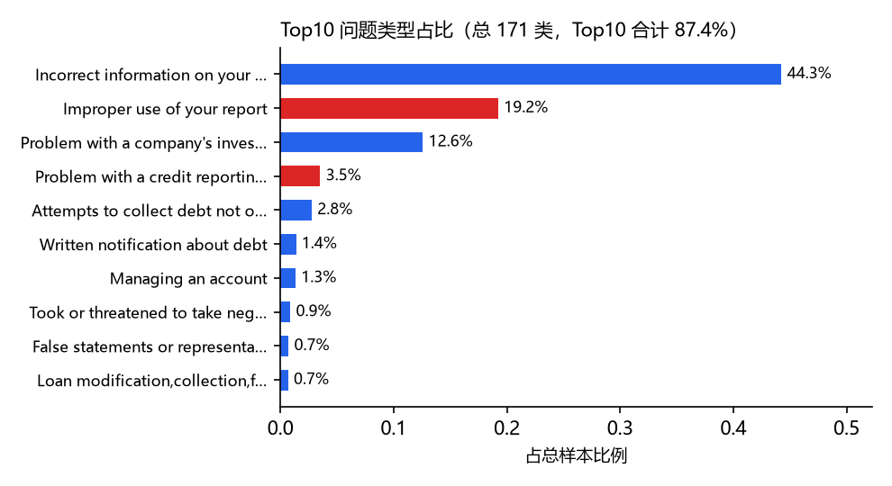
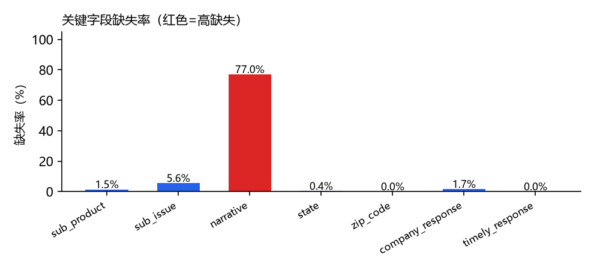
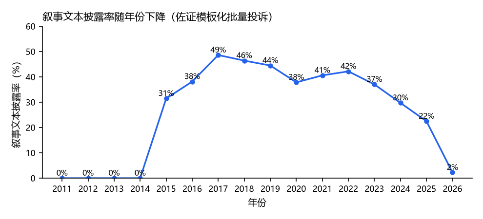
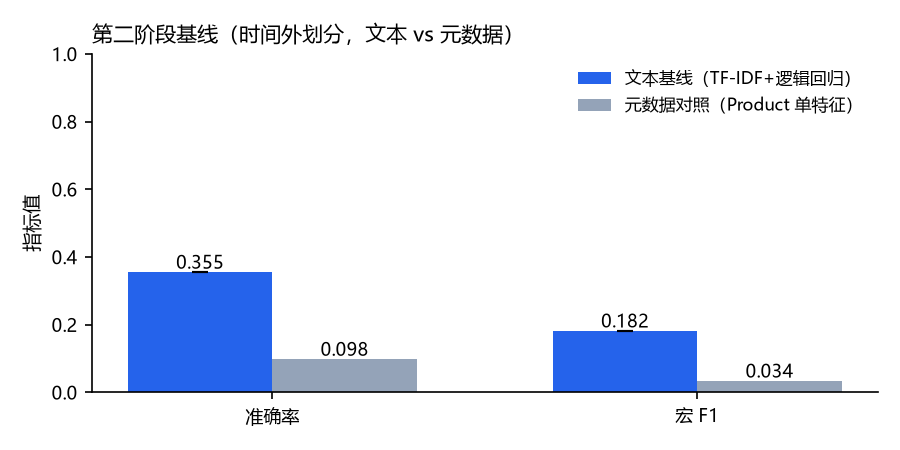

CFPB Consumer Complaint Issue Classification: Data and Experimental Design
| 项目阶段 | 阶段 2：数据与实验设计 | 日期 | 2026-11-08 |
| 团队成员 | 邵飞翔、沈勇 | ||
| 仓库地址 | https://github.com/Shyyyggg/cfpb-issue-classifier | ||
| 提交版本 | 仓库标签 phase-2-submission（评分请使用该标签所指的不可变版本） | ||
执行摘要。本阶段延续阶段 1 的投诉问题类型（Issue）自动分类任务，重点解决阶段 1 已识别的两个核心缺陷：随机划分带来的数据泄漏风险，以及类别极度偏斜导致的评估失真。本阶段完成了：16 字段数据字典的逐条文档化、有目的的探索性数据分析（EDA）、基于时间外划分 + 消费者级去重的防泄漏划分方案，并实现了 TF-IDF + 逻辑回归的文本基线。关键发现是，时间外划分后测试集的叙事覆盖率骤降至 8.7%（全库约 23%），说明纯文本分类在时间外场景下面临样本不足的硬约束。在防泄漏的留出测试集上，文本基线取得宏 F1 0.1818（准确率 0.3553），显著高于阶段 1 规则基线的 0.047，也远高于元数据对照的 0.0337。主要局限仍是类别长尾分布与叙事覆盖率持续走低。下一阶段将进行多方法的受控比较与错误分析，并探索文本与元数据特征的融合。
阶段 1 教师反馈及本阶段的处理如下：
| 先前的反馈 | 采取的行动 | 证据/位置 |
|---|---|---|
| 随机划分存在乐观偏差 | 改用时间外划分 + 消费者级去重 | 第 4 节、src/split.py |
| 类别极度偏斜未充分应对 | EDA 量化不平衡，评估改用宏 F1 + 置信区间 | 第 3 节、src/evaluate.py |
| 叙事文本覆盖率低 | 元数据与文本两条特征线分开评估 | 第 5 节、src/text_baseline.py |
任务：多类分类——给定一条消费者投诉在提交时刻可获得的字段，预测其标准化问题类型标签 Issue。
目标变量：Issue（全库 181 类）。
成功的可操作化定义：在防泄漏的留出测试集上，（i）宏 F1 至少达到多数类基线的 1.3 倍；（ii）准确率不低于阶段 1 规则基线；（iii）全流程可由仓库脚本在固定种子下复现，指标差异 < 0.1%。
数据来自美国消费者金融保护局（CFPB）Consumer Complaint Database，公开数据（开放数据/公共领域），可从 CFPB 官网直接下载。全量约 16,545,376 条记录、8.9 GB、16 个字段，时间跨度 2011-12 至 2026-07。
16 个字段的完整数据字典见附录 A，核心字段概览如下：
| 字段 | 类型 | 在本项目中的角色 |
|---|---|---|
| issue | 标签 | 预测目标（181 类） |
| product | 分类 | 最强单特征（阶段 1 规则基线已用） |
| narrative | 文本 | 文本特征来源（覆盖率 23.1%） |
| state / zip_code | 分类 | 地域特征 |
| submitted_via | 分类 | 渠道特征 |
| company | 分类 | 公司特征（8000+ 类，高基数） |
| timely_response / company_response | 分类 | 结果特征（不作为输入，避免泄漏） |
以下统计均在固定种子蓄水池抽样（n=300,000，seed=42）上计算，每个数字对应一个具体结论。
抽样中出现 171 个 Issue 类别（全库 181 类，抽样未覆盖极罕见的尾部类）。类别分布极度偏斜：
结论：这是典型的长尾分布。宏 F1（对每个类别平等加权）会比准确率低很多，因为大量尾部类难以预测。评估必须用宏 F1 而非只看准确率。

| 字段 | 缺失率 | 是否可用作输入 |
|---|---|---|
| narrative（叙事文本） | 77.0% | 仅 23% 有文本，文本特征可用样本有限 |
| sub_issue | 5.6% | 缺失可容忍，但信息量不如 issue |
| company_response | 1.7% | 结果字段，不可作输入（防泄漏） |
| sub_product | 1.5% | 可用 |
| state | 0.4% | 可用 |
| zip_code | 0.0% | 可用 |
| timely_response | 0.0% | 结果字段，不可作输入 |
结论：叙事文本 77% 缺失是文本特征的最大瓶颈；company_response 和 timely_response 是「处理结果」字段，出现在投诉之后，若用作输入属于数据泄漏，本阶段明确排除。

叙事文本的披露率在 2017 年达到峰值（48.6%）后逐年走低，这是「模板化批量投诉」假设的直接证据：
| 年份 | 叙事披露率 |
|---|---|
| 2017 | 48.6% |
| 2018 | 46.4% |
| 2020 | 37.9% |
| 2022 | 42.2% |
| 2024 | 29.7% |
| 2025 | 22.5% |
结论：投诉越来越多地以「批量模板」形式提交（同一消费者/机构重复提交相似内容），叙事文本比例持续走低。这同时印证了两个判断：① 必须做消费者级去重；② 纯文本分类的可用样本天花板在持续收窄。

时间外划分后，测试集的叙事覆盖率骤降至 8.7%（全库约 23%）。原因：时间外划分的测试集是最新的投诉（2025-11~2026-07），而叙事披露率恰恰在近年最低（2025 年仅 22.5%）。
这一观察直接改变了我们的设计：纯文本分类在时间外评估下几乎不可行（测试集只有约 1,500 条有叙事的样本）。因此本阶段及后续阶段，文本特征必须与元数据特征（Product、State 等）结合，而非单独依赖文本。这比阶段 1 设想的「纯文本基线」更加务实。
src/parser.py）：非法日期、列数不足的行拒绝并计数。按投诉接收时间升序排序，前 80% 作训练、后 20% 作测试，模拟「用历史预测未来」的真实部署场景。不洗牌，保证训练时间严格早于测试时间。
同一消费者可能批量提交模板化投诉。以「叙事文本指纹（前 64 字符）」或「ZIP+公司」组合为消费者判定键，去重后同一消费者只出现在训练集或测试集其中一边。
在抽样 n=300,000 上：去重前 300,000 条 → 去重后 115,778 条，移除了 184,222 条疑似重复（占 61.4%）。这个数字本身就说明模板化批量投诉的严重程度——超过六成的投诉是「疑似同一消费者/机构」的重复提交。
时间外划分后：训练 92,622 / 测试 23,156。泄漏检查结果 overlap=0，leak_free=True，确认训练集与测试集之间无消费者重叠。
| 划分 | 时间范围 |
|---|---|
| 训练集 | 2011-12-01 ~ 2025-11-08 |
| 测试集 | 2025-11-08 ~ 2026-07-05 |
训练集严格早于测试集，模拟「用历史投诉预测未来投诉」的真实部署场景。
除了单元测试，我们还做了数据对账来证明实现正确、结果可复现：
| 检验项 | 结果 |
|---|---|
| 全量记录数核对 | 流式扫描计数 = 16,545,376 条，与原始文件记录数完全一致（阶段 1 两次独立扫描交叉验证） |
| 蓄水池抽样可复现 | 固定 seed=42 下，n=300,000 抽样结果与 split_report.json 完全一致 |
| 时间泄漏回归测试 | 新增 test_temporal_split_never_uses_future_dates：断言训练集最大日期 ≤ 测试集最小日期，且测试集日期绝不进入训练集 |
| 消费者去重对账 | 去重前 300,000 → 去重后 115,778，移除 184,222 条（61.4%），泄漏检查 overlap=0, leak_free=True |
| 阶段 1 回归 | 阶段 1 的 16 个测试全部保持通过，阶段 2 新增 13 个测试，共 29 个全部通过 |
其中时间泄漏回归测试是我们针对「AI 辅助写代码」专门加的验收项（详见附录 B 提示词 5）：把「训练集绝不能看到测试期的数据」从一句口头声明，变成一个可执行、会失败的断言。这比只在报告里说「我们做了时间划分」更有说服力——老师可以直接运行 pytest tests/test_split.py 验证。
在时间外划分 + 消费者去重的留出测试集上（抽样 n=200,000，去重后 84,653 条，训练 67,722 / 测试 16,931）：
| 方法 | 测试样本 | 准确率 | 宏 F1 |
|---|---|---|---|
| 文本基线（TF-IDF + 逻辑回归） | 1,469（有叙事） | 0.3553 ± 0.0 | 0.1818 ± 0.0 |
| 元数据对照（Product 单特征，有叙事测试集） | 1,469 | 0.0980 | 0.0337 |
| 元数据对照（Product 单特征，全量测试集） | 16,931 | 0.0310 | 0.0273 |
（文本基线为 5 个种子 42–46 的均值；标准差为 0 说明在固定数据与固定超参数下逻辑回归收敛稳定。）

关键发现：
本阶段，邵飞翔主要负责整理数据、划分训练和测试数据，并检查处理过程；沈勇主要负责分析数据、尝试分类方法，以及制作图表和整理报告。我们围绕以下问题开展工作：
| 成员 | 想解决的问题 | 完成的工作 |
|---|---|---|
| 邵飞翔 | 数据里的每一列是什么意思？哪些信息可以用来分类？ | 逐项核对 16 个字段的含义，整理成说明表；区分投诉提交时已有的信息和处理后才产生的信息，避免把后续处理结果当作预测依据。 |
| 邵飞翔 | 怎样检验模型能否判断以后的投诉？重复内容会影响结果吗？ | 将较早的投诉用于训练，较晚的投诉用于测试；尝试根据文本开头、邮编和公司信息识别疑似重复记录，并检查两部分数据是否存在相同的判定键。 |
| 邵飞翔 | 数据处理程序能按预想工作吗？ | 编写 7 项检查，覆盖时间顺序、疑似重复记录的处理、划分比例等情况，检查程序能否正确处理这些情况。 |
| 沈勇 | 哪些投诉最多？哪些信息经常缺失？有文字描述的投诉比例如何变化？ | 统计各类投诉的数量、各字段的缺失情况，以及不同年份的文本提供比例，整理出影响后续分类的主要问题。 |
| 沈勇 | 电脑能否根据投诉文字判断问题类型？只看产品类别又会怎样？ | 运行一种简单的文本分类方法，处理运行中遇到的问题；再与只使用产品类别的方法比较，观察两种方法的分类效果。 |
| 沈勇 | 怎样让读者更容易看懂过程和结果？ | 制作类别分布、信息缺失、文本比例变化和分类结果对比图，整理报告初稿，并记录向 AI 提问及检查其回答的过程。 |
两人共同讨论了结果的含义和方法的局限，并在提交前核对报告中的数字与表述。
问题一：数据里的每一列是什么意思？哪些信息可以用？ 我逐项查看 16 个字段的含义，整理成说明表，并核对大类和小类的关系、处理公司名称多余的引号。我发现，公司的处理结果和是否及时回复，都是投诉提交后才产生的信息，不能用来判断刚收到的投诉属于哪一类，因此在说明表中明确标注。
问题二：怎样检验电脑能不能判断以后的投诉？ 我按收到投诉的时间排序，用较早的数据训练，再用较晚的数据测试。这样更接近实际使用时的情况：先学习过去的投诉，再判断以后收到的投诉。
问题三：重复内容会不会让分类成绩看起来更好？ 我尝试用文字开头的 64 个字符识别疑似重复内容；没有文字时，再参考邮编和公司信息。处理后，检查训练和测试两部分是否还有按这套规则判为重复的记录。这些信息只能帮助判断疑似重复，不能确定是不是同一个人，因此删除 61.4% 的记录也不能直接理解为六成投诉来自重复消费者。
问题四：怎样知道数据处理程序确实按要求工作？ 我先编写 7 项检查，用少量构造的数据测试时间顺序、重复记录的处理和划分比例等情况，也检查程序遇到不合理的设置时能否报错。检查通过后，再处理真实数据，减少在大量数据上反复出错的成本。
问题一：先看哪些数据，才能知道分类难在哪里？ 我先统计各类投诉有多少、哪些信息经常空着，以及不同年份有文字描述的投诉比例。结果发现，最多的一类占 44.3%，前十类合计占 87.4%，约 77% 的投诉没有文字描述。这提醒我：除了看总体答对多少，还要看不同类别是否都能分好。
问题二：电脑能根据投诉文字判断问题类型吗？ 我先运行一种简单的文本分类方法，并调整程序设置，解决运行时遇到的多类别分类问题；再与只看产品类别的方法比较。在同一批 1,469 条有文字描述的测试投诉中，两种方法分别答对 35.53% 和 9.80%。这说明，在这批样本上，文字能提供更多分类线索。
问题三：怎样检查结果有没有算错？ 我用第一阶段已有的评估程序重新计算分类得分，并在固定数据和设置下重复运行五次，得到一致的结果。这可以检查重复运行是否一致，但还不能说明换一批数据后，效果也同样稳定。
问题四：怎样讲清楚发现，并确定下一步做什么？ 我把投诉数量、信息缺失、文字提供比例的变化和分类效果做成四张图，调整中文显示和标签，整理报告及向 AI 提问、检查回答的记录。测试集中只有 8.7% 的投诉有文字描述，因此只靠文字只能覆盖一小部分投诉。下一步计划结合产品类别等信息，再检查是否能改善分类效果。
数据来源：CFPB Consumer Complaint Database（公开数据，许可：公共领域 / 开放数据）。观测单位：一条消费者投诉；全量约 16,545,376 条记录，16 个字段。
| # | 字段名 | 类型 | 含义 | 示例 | 缺失处理 |
|---|---|---|---|---|---|
| 1 | date_received | 日期 | 投诉被 CFPB 接收的日期（ISO8601） | 2024-01-25T19:56:56.000Z | 缺失/非法日期整条拒绝 |
| 2 | product | 分类 | 产品大类（已按历史 schema 归一化） | Credit reporting or other personal consumer reports | 空值记为 UNKNOWN |
| 3 | sub_product | 分类 | 产品子类 | Credit reporting | 空值记为 UNKNOWN |
| 4 | issue | 标签 | 问题类型（本项目预测目标，181 类） | Incorrect information on your report | 空值记为 UNKNOWN |
| 5 | sub_issue | 分类 | 问题子类 | Account status incorrect | 空值记为 UNKNOWN |
| 6 | narrative | 文本 | 消费者自述（自由文本，平均 1020 字符） | They keep calling about a debt I do not owe. | 空串表示未提供 |
| 7 | company_public_response | 文本 | 公司对 CFPB 的公开回应 | Company has responded to the consumer... | 空值记为 UNKNOWN |
| 8 | company | 分类 | 被投诉公司名 | Experian Information Solutions Inc. | 空值记为 UNKNOWN，去除首尾引号 |
| 9 | state | 分类 | 消费者所在州（大写两位缩写） | TN | 空值记为 UNKNOWN，统一转大写 |
| 10 | zip_code | 分类 | 消费者邮编（5 位） | 38141 | 空值记为 UNKNOWN |
| 11 | tags | 分类 | 标签（如 Servicemember） | Older American | 空值记为 UNKNOWN |
| 12 | submitted_via | 分类 | 提交渠道 | Web | 空值记为 UNKNOWN |
| 13 | date_sent_to_company | 日期 | 投诉转交公司的日期 | 2024-01-25T19:56:59.000Z | 缺失不拒绝 |
| 14 | company_response | 分类 | 公司给消费者的处理结果 | Closed with non-monetary relief | 空值记为 UNKNOWN |
| 15 | timely_response | 布尔 | 公司是否及时响应（Yes/No） | Yes | 空值记为 UNKNOWN |
| 16 | complaint_id | 标识 | 投诉唯一编号 | 8223945 | 空值记为 UNKNOWN |
注：issue 是本项目的预测目标（多类分类标签），其余字段为可用输入特征。
本阶段我们使用了生成式 AI 助手（WorkBuddy）辅助开发，但所有统计数字、评估指标、代码逻辑均由我们自己在本地真实数据上运行并审查验证。AI 的使用范围限定在：模块代码框架的起草、测试用例的启发、报告文字的组织。以下是具体的提示词设计和我们对 AI 输出的审查过程，以体现我们自己的思考与决策。
我们没有把整个项目「一句话丢给 AI」，而是把问题拆成几个可验证的小任务，每个任务配一个明确的提示词，并且对 AI 的每个输出都做了人工审查 + 本地运行验证。这是我们认为正确的 AI 使用方式：AI 是辅助，决策和验证仍然是我们自己做。
问题 1：怎样用过去的投诉来检验以后的投诉？
我们问 AI：请帮我们按投诉收到的时间划分数据，用较早的数据训练、较晚的数据测试，并检查相似内容是否同时出现在两部分中。每次运行要能得到相同的划分结果。
我们检查和修改：AI 先建议参考邮编和公司信息。我们改为有文字时先看开头 64 个字符，没有文字时再参考邮编和公司。这些只能帮助识别疑似重复，不能确定是同一个人。我们还要求程序显示两部分的时间范围和重复检查结果，并先通过 7 项检查，再处理真实数据。
问题 2：先看哪些数据，才能找出分类的难点？
我们问 AI：请围绕三个问题帮我们统计：各类投诉有多少、哪些信息经常空着、不同年份有文字描述的投诉比例怎样变化。每项统计都要帮助理解后面的分类结果。
我们检查和修改：删去与这些问题无关的统计，区分投诉提交时已有的信息和之后才产生的处理结果。文字比例的变化用于说明数据情况，不能仅凭它判断投诉是否由同一个人批量提交。
问题 3：先试哪种简单的分类方法？
我们问 AI：我们刚开始做投诉分类，想先试一种简单方法。请说明怎样让电脑根据文字分类，给出基本代码，并说明怎样检查结果。
我们检查和修改：用第一阶段已有的评估程序重新计算得分，并增加只看产品类别的方法，与文字分类在同一批测试数据上比较，看看文字是否提供了更多线索。
问题 4：每一列的意思和空值该怎么说明？
我们问 AI：请把 16 个字段整理成说明表，写清名称、含义、例子，以及这一列空着时怎样处理，方便放进报告。
我们检查和修改：逐项核对含义、例子和空值处理，确认大类与小类的关系，并标明哪些信息在投诉处理后才出现，不能用来判断刚收到的投诉。
问题 5：怎样发现程序把较晚的投诉放进了训练数据？
我们问 AI：请编写自动检查，确认用来训练的数据早于用来测试的数据。如果时间顺序不符合要求，程序就要报错。
我们检查和修改：除了比较日期范围，还检查两部分是否混入相同的日期。再故意放入分错的数据，确认有错误时会报错、正确划分时能通过，检查这项测试本身是否起作用。
| 问题 | 我们问了什么 | 我们怎样检查和修改 |
|---|---|---|
| 1 数据划分 | 怎样避免相似内容同时出现在训练和测试中？ | 先看文字开头，没有文字时参考邮编和公司；只作为识别疑似重复的线索。 |
| 2 先看数据 | 应该统计哪些内容？ | 只分析投诉类别、空缺信息和文字比例，删去无关内容。 |
| 3 尝试分类 | 文字能帮助分类吗？ | 增加只看产品类别的方法，在同一批数据上比较，并重新计算得分。 |
| 4 字段说明 | 每一列是什么意思？ | 逐项核对含义、例子和空值处理，标明不能用于预测的后续信息。 |
| 5 自动检查 | 时间分错了，程序能发现吗？ | 先确认正确的数据能通过检查。再放入时间顺序错误的数据，检查程序会不会报错。 |
我们从「每列是什么意思」「怎样检验以后的投诉」「电脑能不能看文字分类」等问题入手，让 AI 帮助起草代码和整理思路，再由自己核对数据、运行程序、比较结果并修改。
这次我们学到：相似内容不一定来自同一个人，投诉处理后的信息不能用来预测刚收到的投诉，检查程序也要用故意构造的错误来验证。AI 的建议需要结合实际数据判断，报告应写清楚结果和局限。
pip install -r requirements.txt pytest tests/ -v python -m src.eda --data /path/to/complaints.csv --sample 300000 --seed 42 python -m src.split --data /path/to/complaints.csv --sample 300000 --seed 42 python -m src.text_baseline --data /path/to/complaints.csv --sample 200000 --seed 42 python tools/figures_phase2.py